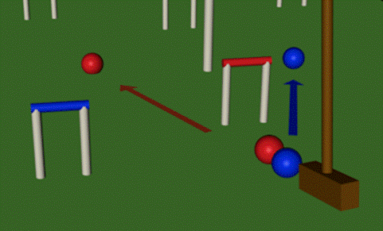

Malletsports is the Only Sport with the Two Ball Shot.

Speculate : It stretches the brain, and may contribute to the laying down of beneficial neural pathways. It is a shot that may help co-ordination of both brain hemispheres and eventually increase creative powers and problem solving.
Why not explore this with your students ?
It may answer lots of your VELS (Victorian Essential Learning Standards) needs in all three strands, Physical and Personal and Social Learning, Discipline Based Learning and Interdisciplinary Learning.
We believe that happiness will increase achievement.
Malletsports is a great adjunct to other sports. Malletsports can bring to consciousness the tactics and strategies of grab and stash games like Football, Netball. It can impart team and pathway thinking. It can be co-operative, gradually introducing competitiveness and only then encouraging aggressiveness.
There is a pathway of variants from self-development and discovery to games as competitive and aggressive as Football.
We have great games, and want to form great partnerships with Schools and also train up School Teachers and Coaches to be able to impart the benefits of Malletsports right through to VET programs.
Currently, Victoria has several school aged players playing in the top international events.
With good coaching from early years, these skills and brain stretching can belong to your students too.
We have worked to make our Schools Programs contain the elements of Learning that match current educational thinking. Experiential, Fun Skills Acquisition leading to Problem Based Discovery Learning, with the possibility for Reflection, with Team based and Individual Co-operations and Competition, in a Whole of Life learning setting.
Let us help you to introduce Malletsports to your School.
Lowen
Lowen Clarke B.A.(Melb.), B.Divinity, Grad. Dip. P.W., M.App.Sci.(Org.Dyn.) Level 3 Coach, MPIO
National Director of Schools Coaching,
Australian Croquet Association
Malletsports is a complex series of skills, strategies and human elements.
Because of its richness, depth and variety, it has benefits for many othersports.

The basis of this is that it is many other sports In Slow Motion and On the Perceivable Surface. We bring the components to the surface.
This goes from its benefits in learning to aim, useful in target sports, to the benefits it can bring to players of Football.
In the skill of aiming, for instance, we break down every constituent part of the process of aiming, and do that deliberatively, and as consciously as we can. By this segmentation, the skill can soon become intuitive.
For sports like Football, several of our diverse sports can each assist the player to bring to the conscious surface what it really going on. Because this is done in Slow Motion, the player can really think about the best strategy.
We find Football Coaches actively seek out malletsports for this purpose.
I’ll go into some depth : to show two aspects of Football that we can be useful with.
Both Croquet and Football share the same goal : to get a ball, get it to a ‘nest’ and stash it. Both are also Invasion games. There are many such grab and stash sports, such as basketball, netball etc.
This involves two things : one, getting the ball also means excluding the opponent from possession, and also, solving the puzzle of finding the pathway to the nest, goalposts or hoop. The exclusion part of the game of football is somewhat hidden in the speed and energy. In Malletsports we are able to deal with these issues with clarity.
In one game we have, golf croquet, the exclusion is done very carefully and with great thought. It may or may not work. This emulates the aggression and competition of football. The actual strategies are nearly visible.
In another game we have, real thought is given to How to get the ball to the Hoop. In football, for instance, once the player has the ball, we are able to separate and bring to the surface in an observable slow motion, the usual high speed thoughts of how to get to the goal.
The opposition are about to make a Goal ! Oh, no, what can our team do ?
The player kicks, but young Joe has intercepted and taken a mark.
But our goalposts now seem a long way off. Joe wonders ‘How can I get the ball to our end ?’
Hey, Joe, over here, calls team mate Tom
Lew calls : Joe, over here, mate and Frank, Here, no here.
Joe has to see beyond the obvious : well who will Tom pass it too ?
How will Joe get an overview of all this and make the right decision ?
Get Joe playing Puzzle Croquet, and give him some extra skills.
We gradually progress players from Learning competence and feeling good with being able to do something, to co-operative games, through to competitive puzzle based games, and to more competitive and aggressive games.
Let Malletsports be an adjunct to your Sport.

Brunswick Malletsports has an opportunity for a person who wants to gain some experience in the sporting world in both coaching and management of a sports club.
We intend to create a sustainable coaching position, which we intend will be funded from fees from our Schools Program, our Active After-School Community, and general Coaching. Some Welcoming, Management and Club coaching will be part of the package.
Brunswick Malletsports Club is a leading Croquet club. It has players at International level in all Malletsports, and high coaching standards.
The successful Schools Coach will be trained in Malletsports, and also be able to be part of a team developing a Whole of Life Coaching and Caring, from Preschool to Senior Adult.
There will be plenty of opportunities to innovate.
WHY MALLETSPORTS ?
Malletsports are useful to other sports
You will learn about Whole of Life sports
Learn Management, Marketing, and Welcoming
The successful applicant will need to show : Tertiary level commitment to Sport.
Ability to get a Working With Children Card, which will be required.
Knowledge of Child Development Theory
Coaching Knowledge, preferably already to Level 2 in any sport.
Hours :
You create the job to suit yourself out of :
We envisage that there are three days where Schools Coaching can be undertaken at the Club : Monday, Tuesday, Wednesday afternoon, some Thursdays, Friday
Five days where Active After-School Community coaching can be undertaken, at the Club or at the local Schools
But we expect :
Saturday morning Welcome for the Community, from Marketing
Monday Evening Coaching for Members and the Wider Malletsports Community (who will pay fees)
Some involvement in Administration and Marketing of the Club, its sports and programs.
How the Position will be paid : a high percentage of the School Fees, and also all the Active AfterSchools Community program remunerations will go to the Club Coach. This may be capped at a certain figure, after which the percentage changes.

We will also develop our Preschool group, at present 120 strong in Playgroup. This is a new and exciting project, ideal for Student Projects and Action Research.